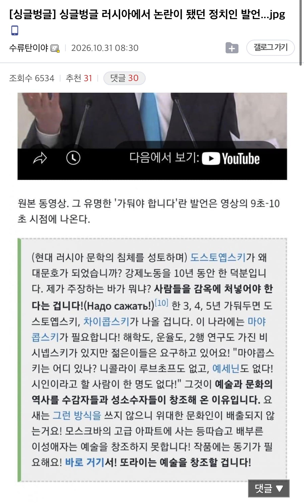
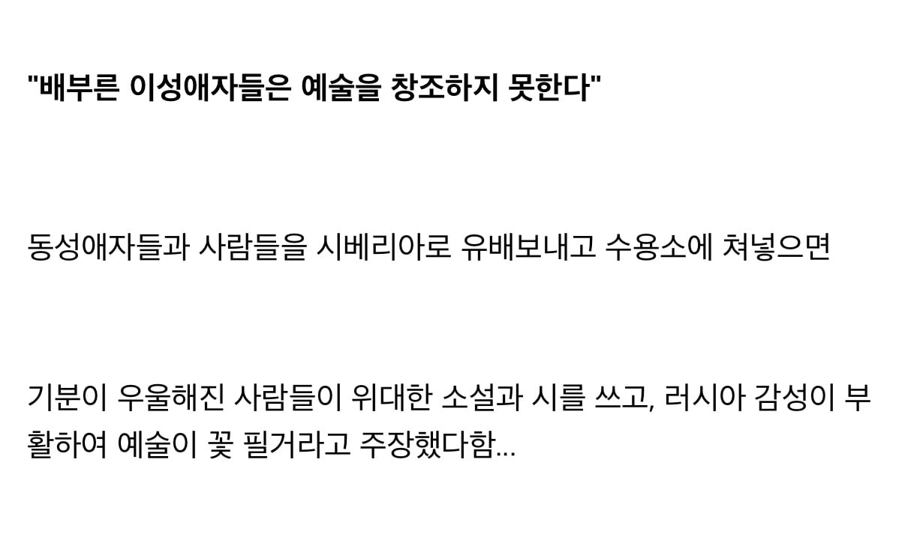
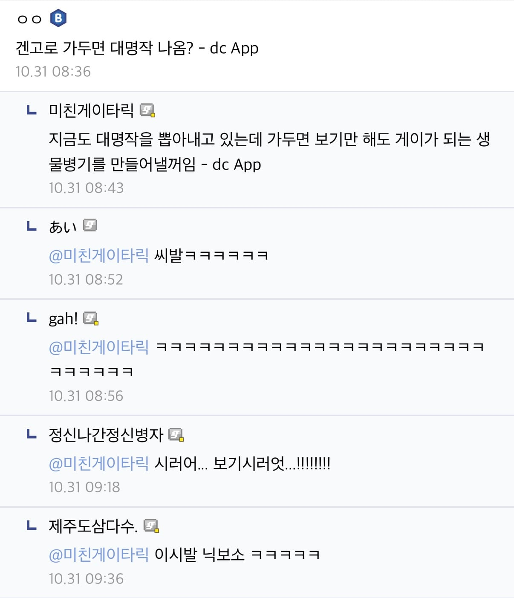

러우전 투입된 병사가 대문호가 됐더만
맞말 같기도 혀 ㅋ
굴라그에 가두니 명작들이 뽑히긴 했어 ㅋㅋㅋ
원래창작은고통의연속입니다
어..다시 말해서
고통을연속으로가하면창작을할수있어요
예술가에게는 고통을 준다.... 이거 정말 멋지네요
본인은 고졸이지만 전 유럽에 예술을 부흥시키려했던 분이 있으셨지
우러전 이미하고있잖아
예술은 부족한 잔고에서 나온다
문외한이 말하면 농담인데 정치인이 말하면 무섭잖아 시발
워낙 대문호들이라 그런가 씨발 그럴듯한데....? 전쟁때문에 저번에 나는 나를 낳았습니다라며 익명의 시인한명 나왔었자네
설득력이..... 있어!!!